<title>Orb focus ring options</title>
<meta name="claude:viewport-fit-sides" content="cover">
<style>
/* Layout: one section per background and mode, four pictures across: today, A, D, E. */
:root { --bg: #fcf9f8; --fg: #2a1418; --soft: #6e5459; --line: #e7e4e3; --card: #ffffff; --accent: #cb1b2c; --font: "Atkinson Hyperlegible Next", "Atkinson Hyperlegible", system-ui, sans-serif; }
@media (prefers-color-scheme: dark) { :root:not([data-theme="light"]) { --bg: #171413; --fg: #fcf9f8; --soft: #c9b6ba; --line: #3c3736; --card: #221e1d; --accent: #ff5c6b; color-scheme: dark } }
:root[data-theme="dark"] { --bg: #171413; --fg: #fcf9f8; --soft: #c9b6ba; --line: #3c3736; --card: #221e1d; --accent: #ff5c6b; color-scheme: dark }
body { margin: 0; background: var(--bg); color: var(--fg); font-family: var(--font); font-size: 16px; line-height: 1.5; padding-block: 32px 48px; padding-left: max(16px, env(safe-area-inset-left, 0px)); padding-right: max(16px, env(safe-area-inset-right, 0px)); }
main { max-width: 1100px; margin-inline: auto; display: grid; gap: 28px; }
h1 { font-size: 1.75rem; margin: 0 0 8px; text-wrap: balance; } h2 { font-size: 1.1rem; margin: 0 0 10px; } h3 { font-size: 1rem; margin: 0 0 6px; }
.lede, .why p { margin: 0; max-width: 66ch; color: var(--soft); } .why { display: grid; gap: 6px; } .why p { color: var(--fg); }
.grid { display: grid; grid-template-columns: repeat(auto-fit, minmax(min(100%, 230px), 1fr)); gap: 12px; }
figure { margin: 0; background: var(--card); border: 1px solid var(--line); border-radius: 12px; padding: 10px; min-width: 0; }
figure.pick { border-color: var(--accent); }
figcaption { font-size: 0.8125rem; color: var(--soft); margin-bottom: 6px; min-height: 2.6em; }
img { display: block; width: 100%; height: auto; border-radius: 6px; }
</style>
<main>
<header><h1>Orb focus ring options</h1><p class="lede"><b>Approved on Oct 20, 2026 as decision D72:</b> one ring per theme for both modes, tight on the ball, with the light band inside and the Orb's own light untouched, the two sections right below. The code is lantern-code #165, and this page is saved in lantern-design-system under docs/references as the record of the review. The rest of the page is the path there.</p><p class="lede">The Orb with keyboard focus on each theme's real background, at twice size. Today's ring vanishes on Spotlight's red header (lantern-design-system #11). D is what you asked for: A without the outer white. E takes it one step further, with the inside light glowing out from the ball and fading, so it reads as the ball's own light. All three pass 3 to 1 against every art color and the plain page in every theme and mode. D has the red edge, as your ask; say D or E.</p></header>
<section class="why"><h3>Why the Orb has keyboard focus at all</h3><p>Only where a person can move the light. In Storybook's glass stories, the Glass playground and Try it out windows, the Orb is a control: you drag it, or focus it and move it with the arrow keys. Anything a person can operate has to show where the keyboard is, so it needs a focus ring there.</p><p>On a product page the light's source is the product's own component (Spotlight's wheel, Sunrise's Let's chat), and a still Orb that nobody moves is decorative: it is not in the tab order and never shows a ring. So this ring only ever appears in Storybook and in playgrounds, never in an app, unless a product makes its light draggable on purpose.</p></section>
<section class="why"><h3>One ring color for both modes?</h3><p>It would be simpler, but the dark mode's ring alone does not hold on light pages: Spotlight's lighter red is 2.09 to 1 on its light page and 2.19 on a white card, Sunrise's near-white ring is 1.0 on its page, and Fireside's peach is 1.34 on its light page (3 to 1 is needed). On art and in dark mode the same rings pass everywhere except Spotlight's red at the wheel, 2.56, which is where the inside light carries it.</p><p>D is already as simple as it gets in code: one rule, the ring color follows the mode through the theme's focus token, and the light inside is one extra line. Nothing switches by hand.</p></section>
<section><h2>The ring tight on the ball, sized from the ball</h2>
<p class="lede">You asked why the ring was so big. It was drawn on the Orb's 44px hit area, the minimum tap target, while the ball inside is 16px, so the gap was empty hit area. Here the ring is drawn on the ball itself: the light band is an eighth of the ball's size and the ring a quarter, so a bigger Orb gets a bigger ring, and the hit area stays underneath, invisible. Same one ring per theme, same numbers, since it sits on the same backgrounds.</p>
<div class="grid"><figure class="pick"><figcaption>Spotlight, light: the ring tight on the ball</figcaption>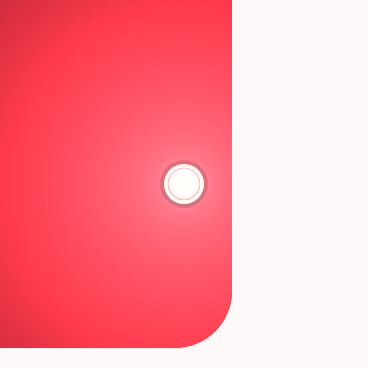</figure><figure class="pick"><figcaption>Spotlight, dark: the ring tight on the ball</figcaption></figure><figure class="pick"><figcaption>Sunrise, light: the ring tight on the ball</figcaption>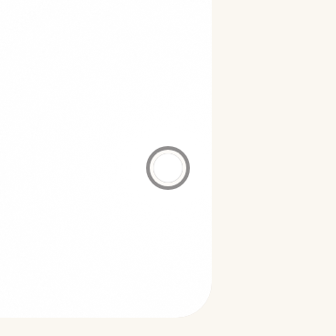</figure><figure class="pick"><figcaption>Fireside, dark: the ring tight on the ball</figcaption>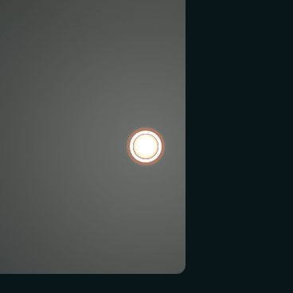</figure></div></section>
<section><h2>One ring per theme, both modes, the Orb's soft light left alone</h2>
<p class="lede">Your two notes together. The bright disc in E, F and G was my CSS stand-in for a flare, not the Orb's light, and not what passes the test; the thin light band between the ball and the ring is. So the disc is gone and the Orb's own soft light stays as it is at rest. And one ring color per theme is enough: the light-mode ring is stepped toward white until it sits right at 3 to 1 on the light page, and that same color has room to spare on the dark page, so there is no dark-mode ring at all. The left picture in each pair is what you named; the right one proves the same ring in the other mode.</p>
<div class="grid"><figure class="pick"><figcaption>Spotlight, light: #de6f7a, 3.01 on the light page, 5.81 on the dark one</figcaption>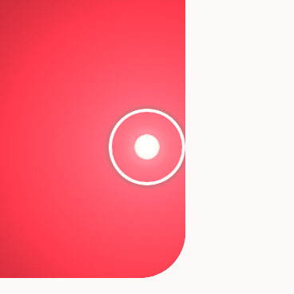</figure><figure><figcaption>Spotlight, dark: the same ring</figcaption>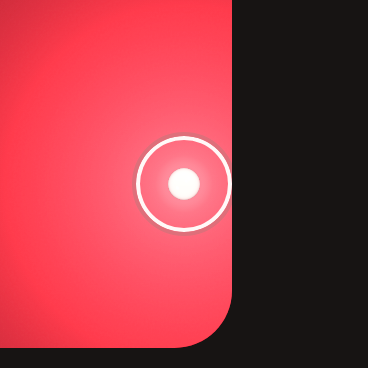</figure><figure class="pick"><figcaption>Sunrise, light: #908e8e, 3.05 on the light page, 4.60 on the dark one</figcaption>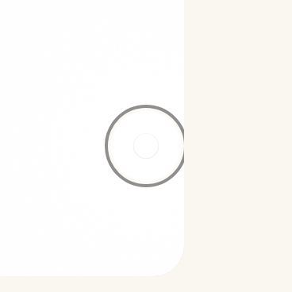</figure><figure><figcaption>Sunrise, dark: the same ring</figcaption>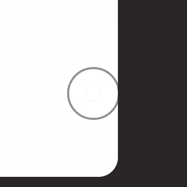</figure><figure class="pick"><figcaption>Fireside, light: #a87a66, 3.04 on the light page, 4.95 on the dark one</figcaption>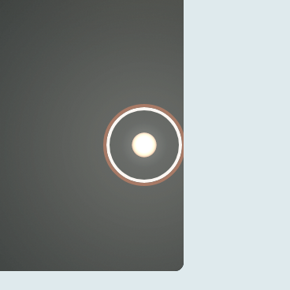</figure><figure><figcaption>Fireside, dark: the same ring</figcaption></figure></div>
<p class="lede">With Increase contrast on, the ring would take the theme's full focus color. A ring this close to 3 to 1 on the light page has no room for a different monitor, so I would hold each one step back toward today's color, about 3.3, if you take this.</p></section>
<section><h2>G, your ask: rings right at the edge of 3 to 1</h2>
<p class="lede">Light mode's ring is the theme's focus color stepped toward white until one more step would fail on the page or a white card. Dark mode's ring is the focus color stepped toward the page until one more step would fail on the page or a dark card. Each sits between 3.0 and 3.4 to 1 on the surface that limits it. The header art is not what limits them: there, the light inside carries the focus, since the ring alone cannot pass on red and on a white card at once. With Increase contrast on, the ring would take the theme's full focus color instead. The ball's own light flares on focus as in E and F. All six are real captures except the plain-page drawings beside them.</p>
<div class="grid"><figure><figcaption>Spotlight, light: #de6f7a, 3.01 on the page, 3.15 on a card</figcaption></figure><figure><figcaption>The same ring on Spotlight's plain light page, a CSS drawing</figcaption><div style="aspect-ratio:1;background:#fcf9f8;border-radius:6px;display:grid;place-items:center"><span style="width:44px;height:44px;border-radius:50%;box-shadow:0 0 0 3px #fff,0 0 0 5px #de6f7a;display:grid;place-items:center"><span style="width:16px;height:16px;border-radius:50%;background:radial-gradient(circle at 40% 35%,#fff,#fee0dd 70%)"></span></span></div></figure><figure><figcaption>Spotlight, dark: #945753, 3.27 on the page, 3.01 on a card</figcaption>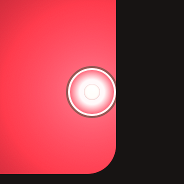</figure><figure><figcaption>The same ring on Spotlight's plain dark page, a CSS drawing</figcaption><div style="aspect-ratio:1;background:#171413;border-radius:6px;display:grid;place-items:center"><span style="width:44px;height:44px;border-radius:50%;box-shadow:0 0 0 3px #fff,0 0 0 5px #945753;display:grid;place-items:center"><span style="width:16px;height:16px;border-radius:50%;background:radial-gradient(circle at 40% 35%,#fff,#fee0dd 70%)"></span></span></div></figure><figure><figcaption>Sunrise, light: #908e8e, 3.05 on the page, 3.16 on a card</figcaption>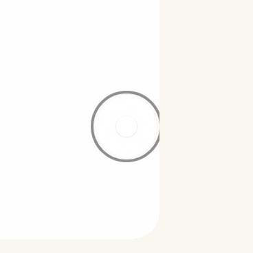</figure><figure><figcaption>The same ring on Sunrise's plain light page, a CSS drawing</figcaption><div style="aspect-ratio:1;background:#faf7f1;border-radius:6px;display:grid;place-items:center"><span style="width:44px;height:44px;border-radius:50%;box-shadow:0 0 0 3px #fff,0 0 0 5px #908e8e;display:grid;place-items:center"><span style="width:16px;height:16px;border-radius:50%;background:radial-gradient(circle at 40% 35%,#fff,#fee0dd 70%)"></span></span></div></figure><figure><figcaption>Sunrise, dark: #7b7875, 3.41 on the page, 3.04 on a card</figcaption>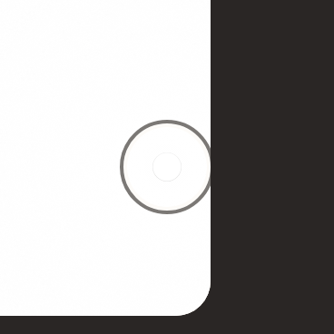</figure><figure><figcaption>The same ring on Sunrise's plain dark page, a CSS drawing</figcaption><div style="aspect-ratio:1;background:#2a2625;border-radius:6px;display:grid;place-items:center"><span style="width:44px;height:44px;border-radius:50%;box-shadow:0 0 0 3px #fff,0 0 0 5px #7b7875;display:grid;place-items:center"><span style="width:16px;height:16px;border-radius:50%;background:radial-gradient(circle at 40% 35%,#fff,#fee0dd 70%)"></span></span></div></figure><figure><figcaption>Fireside, light: #a87a66, 3.04 on the page, 3.72 on a card</figcaption></figure><figure><figcaption>The same ring on Fireside's plain light page, a CSS drawing</figcaption><div style="aspect-ratio:1;background:#dfeaed;border-radius:6px;display:grid;place-items:center"><span style="width:44px;height:44px;border-radius:50%;box-shadow:0 0 0 3px #fff,0 0 0 5px #a87a66;display:grid;place-items:center"><span style="width:16px;height:16px;border-radius:50%;background:radial-gradient(circle at 40% 35%,#fff,#fee0dd 70%)"></span></span></div></figure><figure><figcaption>Fireside, dark: #85705c, 3.92 on the page, 3.09 on a card</figcaption>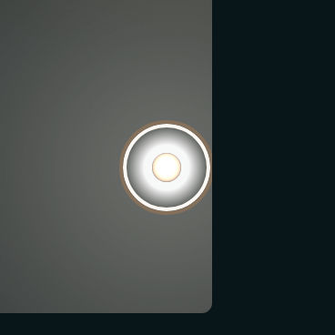</figure><figure><figcaption>The same ring on Fireside's plain dark page, a CSS drawing</figcaption><div style="aspect-ratio:1;background:#08161a;border-radius:6px;display:grid;place-items:center"><span style="width:44px;height:44px;border-radius:50%;box-shadow:0 0 0 3px #fff,0 0 0 5px #85705c;display:grid;place-items:center"><span style="width:16px;height:16px;border-radius:50%;background:radial-gradient(circle at 40% 35%,#fff,#fee0dd 70%)"></span></span></div></figure></div>
<p class="lede">The ratios are measured the way the test measures, against the solid page and card colors. A ring this close to the line has no room for a slightly different monitor, so if you take G I would hold each one a touch above the edge, at about 3.3, which is one step back toward today's color.</p></section>
<section><h2>F, your direction: the light itself, with the softest ring that still passes <span style="font-weight:400;color:var(--soft);font-size:0.875rem">Light mode</span></h2>
<p class="lede">Your note: the light source itself should be enough, the ring as soft as it can be while it still passes, and a stronger focus only for people who turn up contrast in Settings. One thing the rules will not let go: keyboard focus has to show for everyone who tabs, not only with contrast up, and it has to be a 3 to 1 change against whatever is around. So F is E's light, the ball's own glow flaring out on focus, plus a ring in the lightest accent-family color that still passes 3 to 1 on the page and on a white card. With Increase contrast on, the ring takes the theme's full focus color instead (D). Dark mode keeps today's rings, which you liked.</p>
<div class="grid">
<figure class="pick"><figcaption>Spotlight light: red 500, 3.18 to 1 on the page (today's deep red is 5.37)</figcaption></figure>
<figure><figcaption>The same ring on Spotlight's plain page, a CSS drawing</figcaption><div style="aspect-ratio:1;background:#fcf9f8;border-radius:6px;display:grid;place-items:center"><span style="width:44px;height:44px;border-radius:50%;box-shadow:0 0 0 3px #fff,0 0 0 5px #f25857;display:grid;place-items:center"><span style="width:16px;height:16px;border-radius:50%;background:radial-gradient(circle at 40% 35%,#fff,#fee0dd 70%)"></span></span></div></figure>
<figure class="pick"><figcaption>Sunrise light: the tertiary ink, 5.13 to 1 (today's near-black is 14)</figcaption>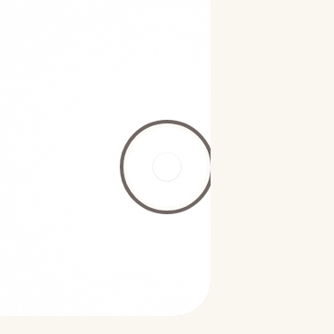</figure>
<figure><figcaption>The same ring on Sunrise's plain page, a CSS drawing</figcaption><div style="aspect-ratio:1;background:#faf7f1;border-radius:6px;display:grid;place-items:center"><span style="width:44px;height:44px;border-radius:50%;box-shadow:0 0 0 3px #fff,0 0 0 5px #716764;display:grid;place-items:center"><span style="width:16px;height:16px;border-radius:50%;background:radial-gradient(circle at 40% 35%,#fff,#fee0dd 70%)"></span></span></div></figure>
<figure class="pick"><figcaption>Fireside light: rust 500, 3.81 to 1 (today's copper is 5.29)</figcaption>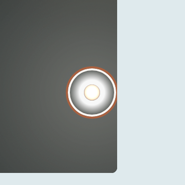</figure>
<figure><figcaption>The same ring on Fireside's plain page, a CSS drawing</figcaption><div style="aspect-ratio:1;background:#dfeaed;border-radius:6px;display:grid;place-items:center"><span style="width:44px;height:44px;border-radius:50%;box-shadow:0 0 0 3px #fff,0 0 0 5px #aa6140;display:grid;place-items:center"><span style="width:16px;height:16px;border-radius:50%;background:radial-gradient(circle at 40% 35%,#fff,#fee0dd 70%)"></span></span></div></figure>
</div>
<p class="lede">If F is the pick, it becomes the Orb's focus and the three softer colors become each theme's light-mode focus token for the Orb only, so buttons and fields keep their rings as they are.</p></section>
<section><h2>Spotlight light with the lighter ring, the trade</h2><p class="lede">You liked the lighter red that Spotlight dark uses. Here it is in light mode, on the header and on the plain page. The ring does not know what is behind it, so one color has to pass on both. The deep red passes on the page (5.37 to 1) and leans on the light inside at the header; the lighter red passes at the header but fails on the page (2.09 to 1) and on a white card (2.19 to 1). The plain-page picture is a CSS drawing, since no Spotlight story puts the Orb on a plain page.</p><div class="grid"><figure><figcaption>Lighter ring on the header, light mode, D</figcaption></figure><figure><figcaption>Lighter ring on the plain page: 2.09 to 1, fails</figcaption><div style="aspect-ratio:1;background:#fcf9f8;border-radius:6px;display:grid;place-items:center"><span style="width:44px;height:44px;border-radius:50%;box-shadow:0 0 0 3px #fff,0 0 0 5px #fe908a;display:grid;place-items:center"><span style="width:16px;height:16px;border-radius:50%;background:radial-gradient(circle at 40% 35%,#fff,#fee0dd 70%)"></span></span></div></figure><figure class="pick"><figcaption>Deep red ring on the plain page, as D has it: 5.37 to 1</figcaption><div style="aspect-ratio:1;background:#fcf9f8;border-radius:6px;display:grid;place-items:center"><span style="width:44px;height:44px;border-radius:50%;box-shadow:0 0 0 3px #fff,0 0 0 5px #cb1b2c;display:grid;place-items:center"><span style="width:16px;height:16px;border-radius:50%;background:radial-gradient(circle at 40% 35%,#fff,#fee0dd 70%)"></span></span></div></figure></div></section>
<section><h2>Spotlight header, light</h2><div class="grid"><figure><figcaption>Today: one ring, the theme's</figcaption>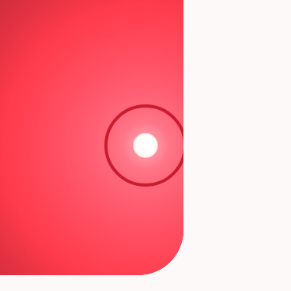</figure><figure><figcaption>A: the theme's ring with a light line each side</figcaption>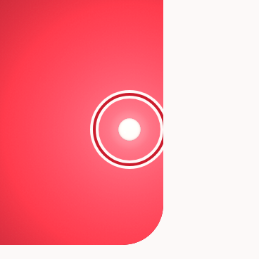</figure><figure class=pick><figcaption>D, your ask: the light only inside, between the ball and the ring</figcaption></figure><figure><figcaption>E: the inside light glows out from the ball and fades</figcaption>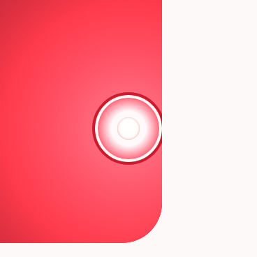</figure></div></section><section><h2>Spotlight header, dark</h2><div class="grid"><figure><figcaption>Today: one ring, the theme's</figcaption></figure><figure><figcaption>A: the theme's ring with a light line each side</figcaption>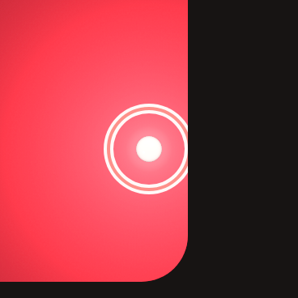</figure><figure class=pick><figcaption>D, your ask: the light only inside, between the ball and the ring</figcaption></figure><figure><figcaption>E: the inside light glows out from the ball and fades</figcaption></figure></div></section><section><h2>Sunrise, a white card on the page, light</h2><div class="grid"><figure><figcaption>Today: one ring, the theme's</figcaption>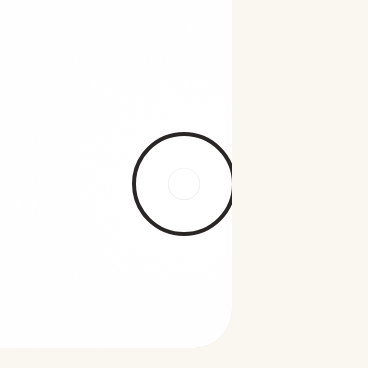</figure><figure><figcaption>A: the theme's ring with a light line each side</figcaption>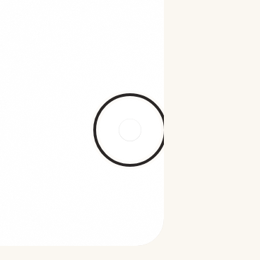</figure><figure class=pick><figcaption>D, your ask: the light only inside, between the ball and the ring</figcaption>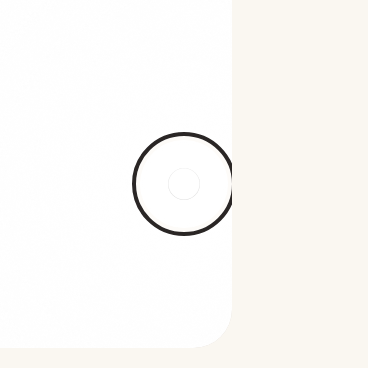</figure><figure><figcaption>E: the inside light glows out from the ball and fades</figcaption></figure></div></section><section><h2>Sunrise, a white card on the page, dark</h2><div class="grid"><figure><figcaption>Today: one ring, the theme's</figcaption>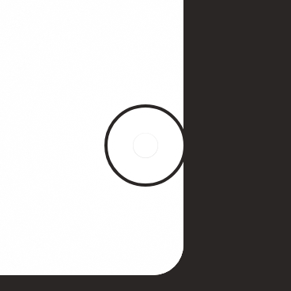</figure><figure><figcaption>A: the theme's ring with a light line each side</figcaption>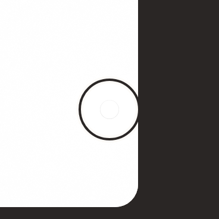</figure><figure class=pick><figcaption>D, your ask: the light only inside, between the ball and the ring</figcaption></figure><figure><figcaption>E: the inside light glows out from the ball and fades</figcaption></figure></div></section><section><h2>Fireside header, light</h2><div class="grid"><figure><figcaption>Today: one ring, the theme's</figcaption></figure><figure><figcaption>A: the theme's ring with a light line each side</figcaption>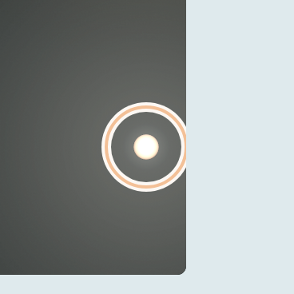</figure><figure class=pick><figcaption>D, your ask: the light only inside, between the ball and the ring</figcaption>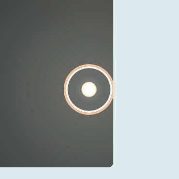</figure><figure><figcaption>E: the inside light glows out from the ball and fades</figcaption>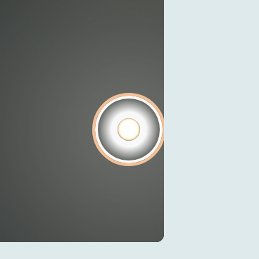</figure></div></section><section><h2>Fireside header, dark</h2><div class="grid"><figure><figcaption>Today: one ring, the theme's</figcaption></figure><figure><figcaption>A: the theme's ring with a light line each side</figcaption>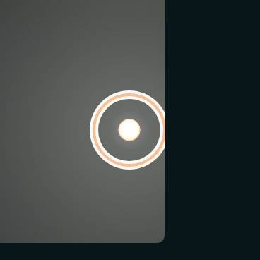</figure><figure class=pick><figcaption>D, your ask: the light only inside, between the ball and the ring</figcaption>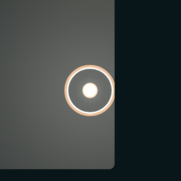</figure><figure><figcaption>E: the inside light glows out from the ball and fades</figcaption></figure></div></section>
</main>
